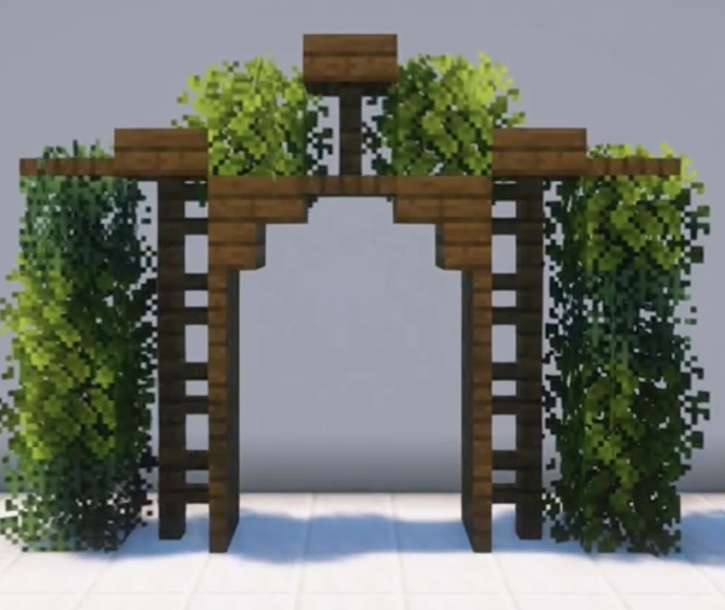

Cherry Gazebo
Beginner
❌ No 3D ModelAn easy, simple archway perfect for any minecraft world!

An easy, simple archway perfect for any minecraft world!
First, place your spruce fences 4 blocks high as shown in the image. Make sure that they are 3 blocks apart.
For the next step, grab your spruce trapdoors and place them on the inside part of the build. Make sure to place them on either side. This should be 3 blocks high.
For the fourth block, make sure to place a spruce stair on either side facing inward. In the middle, add a spruce trapdoor as seen in the image.
Now, let's add some details to this archway. On either side of the build, add a singular spruce slab on top of the spruce fence. After, add a spruce fence on top of the spruce trapdoor. On top of the spruce fence should be the spruce slab. On either side of this, place any type of leave block.
Now, for the final touch, add leaves on the sides of the archway as shown in the image. These should be 4 blocks high. On either side of the build, attach a spruce trapdoor to the slab.
This is the final look of the archway! You can add more leaves or details as you like.
Images and inspiration for this build were referenced from history.time545. All instructions and annotated images here are created by MineMaster.